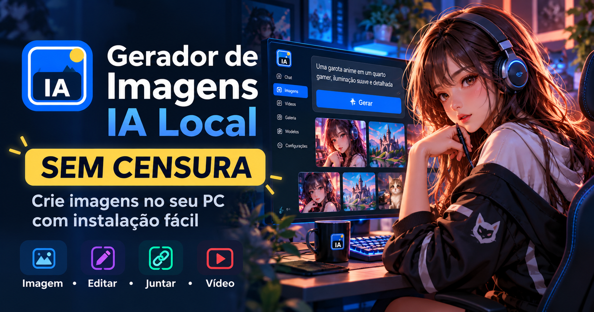
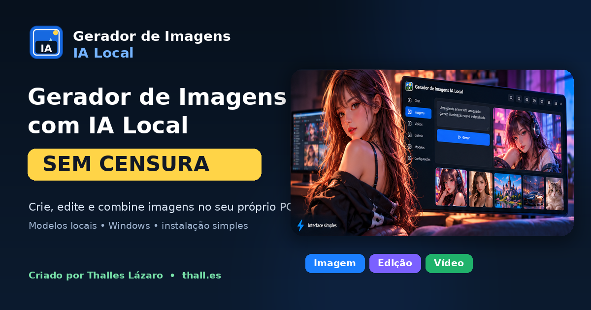

Texto → Imagem
Gere imagens localmente com Qwen Image e variantes configuráveis.
IA local para Windows
Crie, edite e combine imagens com IA sem censura e trabalhe com vídeo usando modelos executados localmente. O projeto reúne os recursos em uma interface simples no navegador e automatiza boa parte da instalação no Windows.

Recursos reais do projeto
O foco é mídia. O chat local existe como apoio para prompts e ideias, mas imagens e vídeos são o centro do fluxo.
Gere imagens localmente com Qwen Image e variantes configuráveis.
Envie uma referência e descreva as alterações que deseja aplicar.
Use duas ou mais referências para criar uma nova composição.
Fluxos de texto para vídeo e imagem para vídeo com motor compatível.
Reutilize resultados, seeds, prompts e referências sem remontar o trabalho.
Organize pedidos e reduza automaticamente a resolução quando um erro de memória for reconhecido.
Instale apenas os recursos desejados e altere variantes sem baixar tudo de uma vez.
modelos.jsonURLs e variantes ficam centralizadas em um catálogo editável, inclusive opções personalizadas.
Geração sem censura
O catálogo do projeto prioriza variantes de modelos sem censura quando há uma versão compatível disponível. Você escolhe o modelo e mantém o processamento no seu computador.


Tutorial em vídeo
O vídeo mostra como preparar o projeto no Windows, abrir a interface, instalar recursos de IA e começar a gerar. A página usa apenas a thumbnail: ao clicar, o tutorial abre diretamente no YouTube.
Assistir no YouTube →Instalação simplificada
O núcleo do projeto é pequeno. Os modelos maiores são instalados depois, sob demanda, pela própria interface.
INSTALAR.batO núcleo e as dependências básicas são preparados.ABRIR.batO servidor local inicia e abre a interface no navegador.Como funciona
Os motores e modelos instalados são executados no próprio computador. Internet é necessária para baixar dependências e modelos; depois disso, os recursos instalados podem operar localmente conforme o motor usado.
Desenvolvedor
Projeto desenvolvido por Thalles Lázaro. Mais projetos, ferramentas e informações estão disponíveis em thall.es.
Perguntas frequentes
É um projeto para Windows focado em geração, edição e transformação de mídia com motores de IA executados localmente e administrados por uma interface no navegador.
A internet é necessária para baixar dependências e modelos. Depois de instalados, os motores configurados podem executar localmente sem depender de um serviço remoto para cada geração.
Não necessariamente. O projeto trabalha com backends que podem usar Vulkan e CPU; compatibilidade e desempenho dependem do modelo, do driver e do hardware.
Sim. A interface permite selecionar variantes e o arquivo modelos.json centraliza URLs e opções personalizadas.
O catálogo prioriza variantes de modelos sem censura quando há uma versão compatível disponível. Nem todo modelo ou motor possui a mesma variante, por isso a interface identifica claramente o modelo selecionado.
Sim. O projeto possui fluxo de vídeo IA e também um modo leve baseado em FFmpeg, dependendo dos recursos instalados.